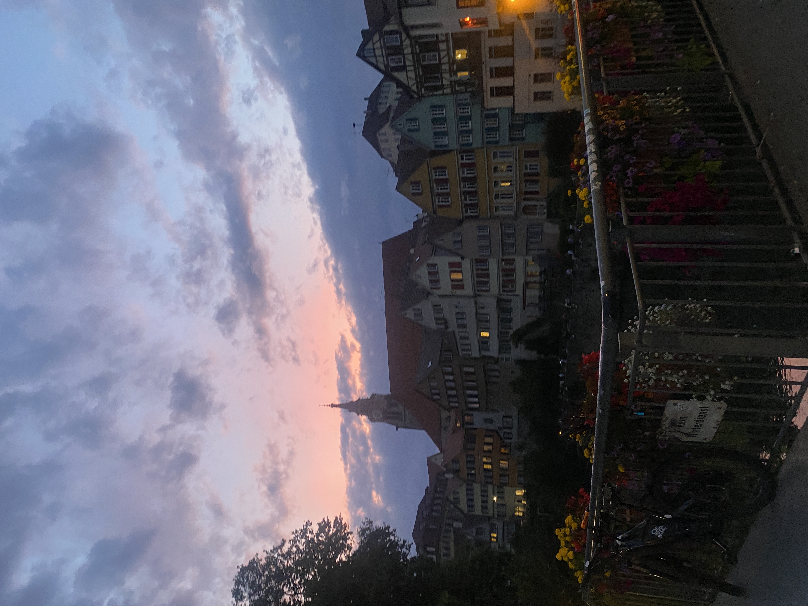

Hi! わたしについて
about me
はじめまして。京都の大学に通う3回生です。岡山県生まれの兵庫県育ち。
専攻はヨーロッパ地域研究なのですが、web上で創作することに興味があってHP作りに挑戦してみました。完全に独学なので何もわからないのですが、地道に頑張るのでどうぞよろしくお願いいたします。
Youtube
たまに、YouTubeでvlogを載せています。是非ご覧ください。

News

はじめまして。京都の大学に通う3回生です。岡山県生まれの兵庫県育ち。
専攻はヨーロッパ地域研究なのですが、web上で創作することに興味があってHP作りに挑戦してみました。完全に独学なので何もわからないのですが、地道に頑張るのでどうぞよろしくお願いいたします。
たまに、YouTubeでvlogを載せています。是非ご覧ください。